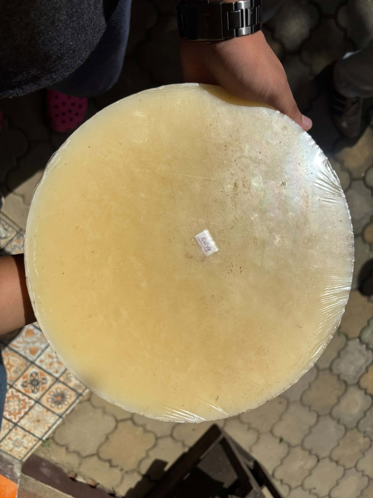

Main ingredient
Beeswax
Beeswax is a natural material produced by honeybees to construct their honeycombs. It serves as the main coating material in our food wrap formulation.
Our identified source
Golden Clover Honey Bee Farm
Bulacnin, Lipa City, Batangas